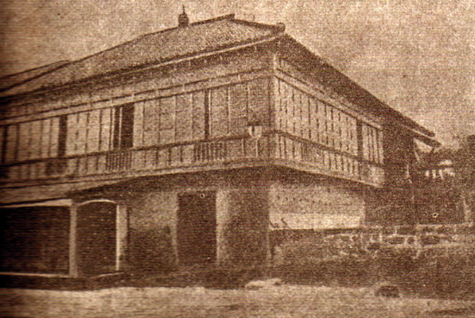

The Mercado - Rizal Family
Rizal family was known to be well-off family in Calamba, Laguna and they were considered as one of the biggest families in those times. They lived a life ofcomfort and prosperity, then considered that his family belonged to the principalia classor the ruling elite of their town.
also, Jose Rizal was born on June 19, 1861 in Calamba Laguna.
Jose Rizal came from a 13-member family, He is the 7th child out of 11 children of Don Francisco Mercado and Dona Teodora Alonzo
Father Of José Rizal
DON FRANCISCO RIZAL MERCADO (1818-1898)Rizal’s father was born on May 11, 1818 and was the youngest of his 13 siblings. Mercado was a well-respected man in their home town of Calamba in which citizens made him the their "cabeza de barangay" (head of town.) He was of part Chinese descent, having been related to a Chinese entrepreneur by the name of Domingo Lamco.
Don Francisco Rizal Mercado builds a Library consisting of books about science and geography that become the vital source of knowledge, creativity and imagination of the young Jose Rizal.

Mother Of José Rizal
Doña Teodora Alonso was born on November 14, 1827 in Santa Cruz Manila. Her parents were Lorenzo Alonso, a municipal captain and Brijida de Quintos, an educated housewife and had four other siblings . It is said that her great grandfather, Eugenio Ursua was of Japanese ancestry making her of Japanese descent. When Teodora was 20 years old, she married Francisco Mercado, a native from Binan, Laguna. Together they prospered in Calamba after involving themselves in business and agriculture. She was known to be a hardworking, intelligent, business minded woman.
José Rizal first school is Home-schooled by his first teacher, Doña Teodora In their home at Calamba.
Family of José Rizal
He is the 7th child out of 11 children of Don Francisco Mercado and Dona Teodora Alonzo.
Rizal Siblings:
1. Saturnina 6. Maria 11. Soledad
2. Paciano 7. Jose
3. Narcisa 8. Conception
4. Olympia 9. Joseta
5. Lucia 10. Trinidad
With the guidance of his mother, Doña Teodora, he learned the alphabet and prayers at the age of 3, and could read and write at age 5, including the Spanish Bible. By the time he was 8 years old, he was able to compose a drama. His mother discovered his talent for poetry and encouraged Jose to write.
His parents employed private tutors to give him lessons at his home. The first private tutor that Jose Rizal had was Maestro Celestino, then Lucas Padua as his second tutor. And lastly, the former classmate of Jose’s father, Leon Monroy, from whom he learned Spanish and Latin.